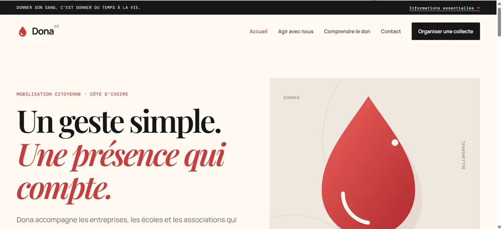
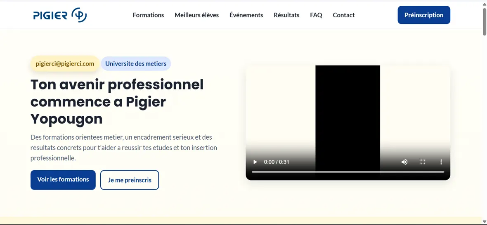
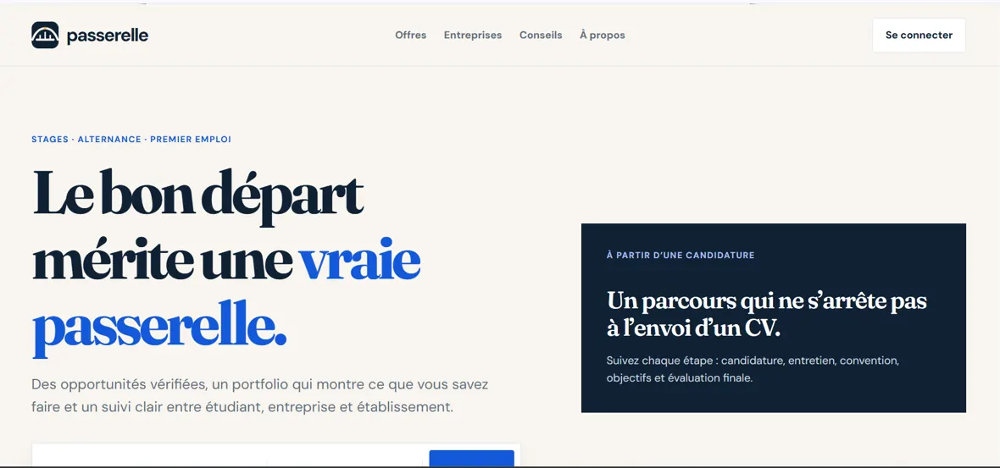
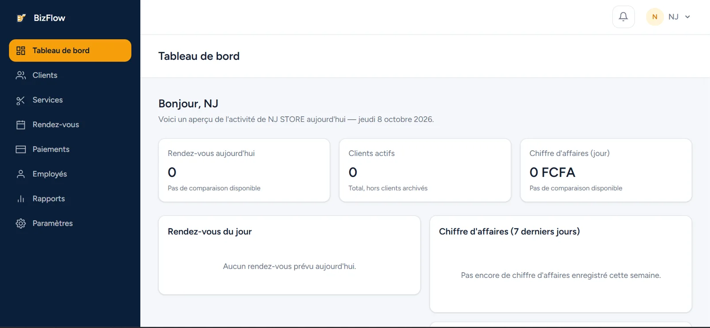

Tous les projets
Projets
Sept projets, des sites vitrines aux plateformes web, jusqu'à un prototype logiciel de suivi satellitaire. Filtrez par technologie ou par statut — chaque fiche précise ce qui est réel et ce qui reste à valider.
 N°01En ligne
N°01En ligneCIBANQUE
Maquette d'application bancaire pour la Côte d'Ivoire : virements, carte, factures. Données fictives.

N°02En ligneDONA CI
Site de mobilisation pour le don de sang : campagne, ressources et contact pour les organisations.

N°03En lignePIGIER CONNECT
Site vitrine et préinscription pour Pigier Yopougon : filières, recherche, FAQ.
 N°04En cours
N°04En coursJEUNEAVENIR CI
Orientation, mentorat et offres de stage pour les jeunes Ivoiriens.

N°05En coursPASSERELLE
Stages et alternance : étudiants, entreprises et établissements sur une même plateforme.

N°06En coursBIZFLOW
Clients, rendez-vous et paiements pour petites entreprises de services.
 N°07En cours
N°07En coursYA SATSCOPE
Logiciel de suivi satellitaire et d'analyse du spectre conçu en équipe pendant mon stage.